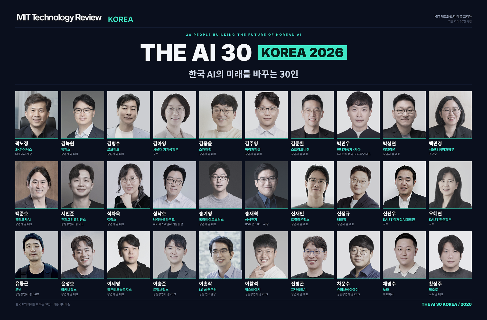
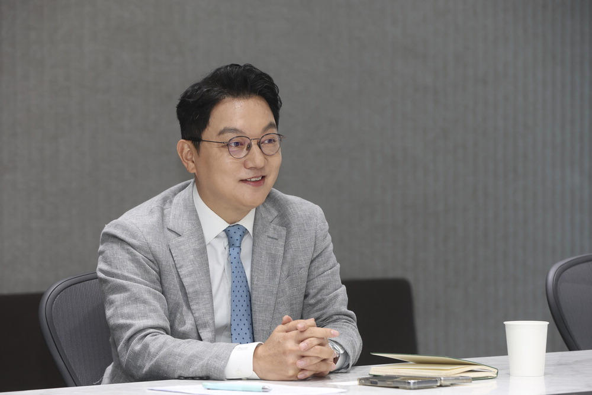
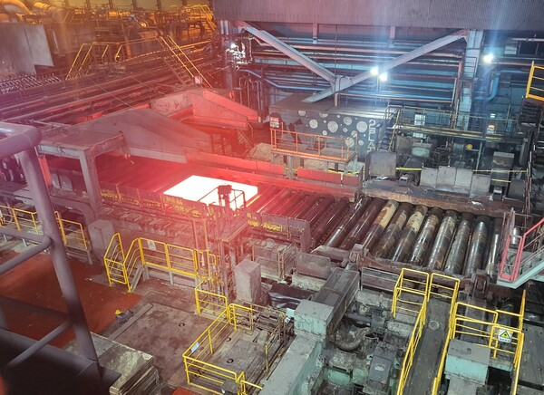
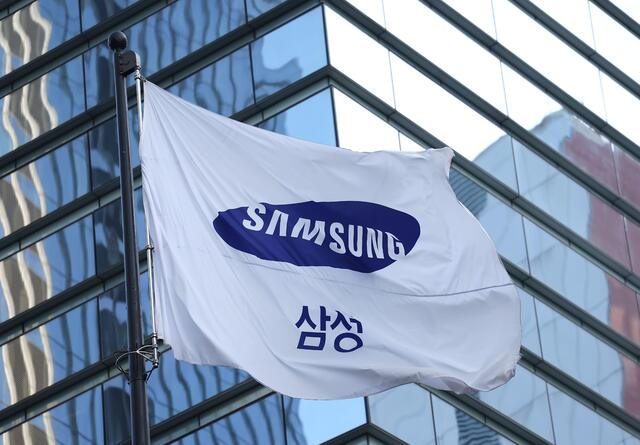
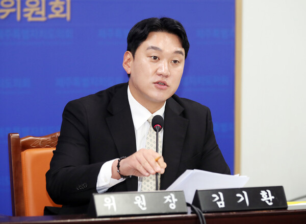
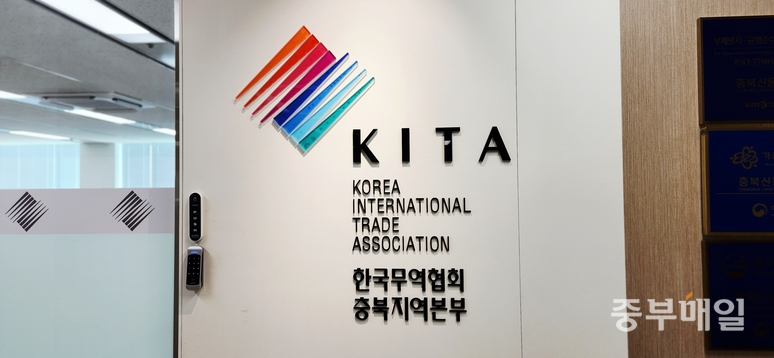
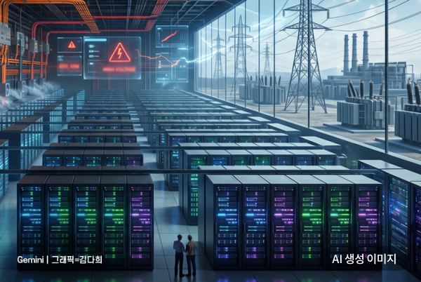
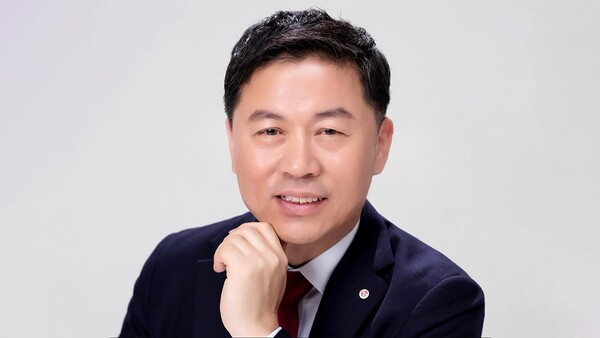
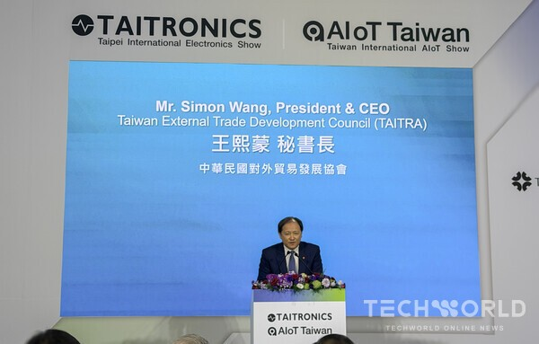
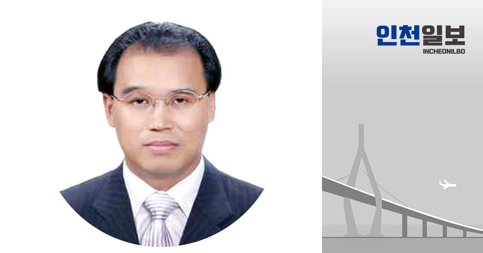

투자·산업
" AI 가 바꾸는 제약·바이오산업 … 데이터 양보다 활용 능력이 관건"
" 정수용 한국아이큐비아 대표는 최근 매일경제 와의 인터뷰에서 인공지능( AI )과 데이터가 향후 10년간 제약... 과거 제약사가 주요 고객이었다면 지금은 의료기기 기업과 병원, 보험사, 정부기관, 투자 자 등으로 협력... — 동향 단계의 사안으로 투자·산업 동향 관점에서 사업·기술 파급 범위을(를) 점검할 필요가 있습니다.
출처 매일경제10.20
AI디자인랩이 매주 전하는 경영진용 Trend & Insight

SK하이닉스와 삼성전자는 AI 데이터센터 와 고성능 AI 연산에 활용되는 HBM 시장의 주요 공급 기업으로 평가받고 있다. 삼성전자는 올해 2월 HBM4 상용 제품을 업계 최초로 양산...
현대건설 시사점 — '선정' 단계까지 확인된 사안으로 AI 데이터센터·전력 인프라 사업 기회 관점에서 사업·기술 파급 범위을(를) 점검할 필요가 있습니다.

" 정수용 한국아이큐비아 대표는 최근 매일경제 와의 인터뷰에서 인공지능( AI )과 데이터가 향후 10년간 제약... 과거 제약사가 주요 고객이었다면 지금은 의료기기 기업과 병원, 보험사, 정부기관, 투자 자 등으로 협력... — 동향 단계의 사안으로 투자·산업 동향 관점에서 사업·기술 파급 범위을(를) 점검할 필요가 있습니다.

통상 AI 데이터센터 는 고성능 GPU 서버와 무거운 수냉식 냉각 설비가 배치·가동되는 만큼 주택 등 일반... 아울러 발전·송배전을 비롯한 차세대 전력망 인프라 구축에 따른 철강 수요를 선점하기 위한 경쟁도 본격화되고... — '가동' 단계까지 확인된 사안으로 AI 데이터센터·전력 인프라 사업 기회 관점에서 사업·기술 파급 범위을(를) 점검할 필요가 있습니다.
LS증권은 일부 보험사가 설계사 조직 과 지원 부서에 AI 도구를 도입하는 과정에서 오히려 사업비가... 카카오뱅크· 삼성 화재·미래에셋증권을 꼽았다. 금융권의 인공지능( AI ) 전환을 표현한 일러스트/사진=LS증권 — 동향 단계의 사안으로 기업동향 동향 관점에서 사업·기술 파급 범위을(를) 점검할 필요가 있습니다.

전자부품과 전력기기 는 AI 데이터센터 증설에 따른 반도체 기판·적층세라믹콘덴서(MLCC)· 전력 설비 수요 증가가 기대 요인이다. 다만 환율과 제품 구성에 따라 실적 개선 폭은 달라질 수 있다. 배터리와 화학 업종은... — '증설' 단계까지 확인된 사안으로 AI 데이터센터·전력 인프라 사업 기회 관점에서 사업·기술 파급 범위을(를) 점검할 필요가 있습니다.
올해 미국 빅테크 4곳은 AI 의 수익성이 확인되기도 전에 7300억달러를 설비투자에 쏟는다. 데이터센터 는 전력 수요와 메모리 반도체 가격을 끌어올렸다. 화이트칼라 일자리가 사라질 것이라는 걱정도 일상이 됐다.... — 동향 단계의 사안으로 AI 데이터센터·전력 인프라 사업 기회 관점에서 사업·기술 파급 범위을(를) 점검할 필요가 있습니다.

제주 AI데이터센터 '바이오 산업' 키운다더니..."정작 예산은 '0원'?". 김 위원장은 이 사업이 40MW급 그린 AI 데이터센터 사업을 추진하기에 앞서 0.3MW급 인프라를 활용해 기술적 적합성과 예산 타당성을 검증하는 사업인 점을 언급하며 "국책사업의 사전 실증인 만큼 중앙정부의 지원을... — 동향 단계의 사안으로 AI 데이터센터·전력 인프라 사업 기회 관점에서 사업·기술 파급 범위을(를) 점검할 필요가 있습니다.

반도체 수출은 인공지능( AI ) 데이터센터 투자 확대와 고대역폭메모리(HBM), 서버용 D램 수요 증가로 62.9% 늘었다. 축전지 및 소재도 글로벌 에너지저장장치(ESS) 시장 성장에 힘입어 60.9% 증가했다. 두 품목의 수출... — 동향 단계의 사안으로 AI 데이터센터·전력 인프라 사업 기회 관점에서 사업·기술 파급 범위을(를) 점검할 필요가 있습니다.

미국에선 전력망 상용화 주도권을 두고 토머스 에디슨의 직류(DC) 진영과 니콜라 테슬라의 교류(AC) 진영이... 그래픽처리장치( GPU )가 집적되면서 100㎾에서 많게는 1㎿에 이르게 됐다. 전력 공급 효율이 데이터센터 ... — 동향 단계의 사안으로 AI 데이터센터·전력 인프라 사업 기회 관점에서 사업·기술 파급 범위을(를) 점검할 필요가 있습니다.

AI 하드웨어 교체 주기는 짧은 반면 데이터센터 수명은 긴 만큼 IT와 전력 , 냉각 설비를 통합 시스템으로 설계하는 방식이 중요해졌다. 이에 따른 냉각 솔루션 업체의 역할 변화도 짚었다. 류 사장은 "냉각 공급업체의... — 동향 단계의 사안으로 AI 데이터센터·전력 인프라 사업 기회 관점에서 사업·기술 파급 범위을(를) 점검할 필요가 있습니다.

AIoT· 데이터센터 · 임베디드 기술 총집결 타이트로닉스에서는 광전자· 디스플레이 기술, 전자부품 및 부품소재, 계측. 측정 기기 , 친환경 전력 , 소비자 제품 및 자동차 전장, 산업용 공정· 자동화 장비 등이 주요.... — 동향 단계의 사안으로 AI 데이터센터·전력 인프라 사업 기회 관점에서 사업·기술 파급 범위을(를) 점검할 필요가 있습니다.

금융 결제망과 전력망, 통신망의 중추인 데이터센터 를 겨냥해 AI 드론이 냉각. 전력 설비를 물리적으로 자폭 타격하고 지능형 사이버 침투가 병행된다면, 국가 기능의 완전 마비와 대규모 인명 피해라는 복합 재앙으로.... — 동향 단계의 사안으로 AI 데이터센터·전력 인프라 사업 기회 관점에서 사업·기술 파급 범위을(를) 점검할 필요가 있습니다.